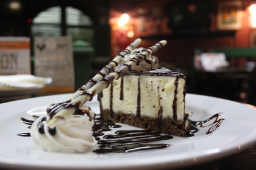
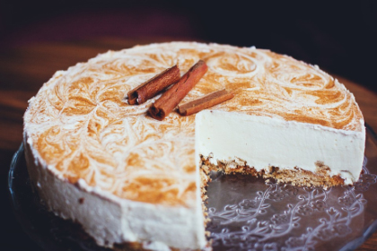
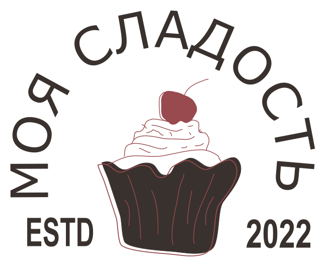

Элемент img
Добавление изображений на страницу
Обратите внимание, что для каждого изображения мы указали атрибут alt. Проверьте как выглядит страница при отключенных изображениях.
Если вы используете GoogleChrome, перейдите в Настройки - Безопасность и конфиденциальность - Настройки сайтов - Картинки - Запретить сайтам показывать изображения.


Экспериментируем с width и height
Обратите внимание, что мы загружем одно и то же изображение несколько раз, но управляем его размерами через атрибуты. Исходный размер изображения: 420 на 280 px.
Меняем только ширину - 200px, высота подстраивается.
Меняем только высоту - 200px, ширина подстраивается.
Меняем оба значения и нарушаем пропорции - ширина 400px, высота 180px.
Увеличиваем значения по сравнению с исходными и получаем "поплывшую" картинку - ширина 800px.
Группируем изображения и подписи к ним
Теперь для браузера и специальных программ изображение и подпись - единое целое.
Элемент Picture
Добавляем на страницу изображение в формате tiff. Обратите внимание, что браузер GoogleChrome такие изображения не поддерживает.
Второй вариант. Загружаем файл logo.tiff из элемента source с помощью picture.
logo.webp будет загружаться, если содержимое элемента source не поддерживается.
